Phase 4: Design Refinement
The Current Design
A New Character for Online Shopping
Our user research has shown that many people don't online shop because they feel like they have to know everything they want before they can start. It is challenging to wander around a grocery website and stumble upon foods you might like because:
- Foods within a given category often aren't grouped logically
- Advertisements take up a lot of cognitive and physical real estate
- Viewing options often feels like an infinite scroll with varying levels of relevance
These factors create a disorienting experience that causes people to go straight for the search bar, which explains why they don't feel comfortable poking around as they might in a physical grocery store. Our goal is to remove these inhibitors so that people can feel comfortable shopping online in whatever way feels most natural to them, and to scaffold an experience that facilitates people finding items organically rather than strictly from a premeditated list.
Encouraging People to Browse the Aisles
Users consistently expressed challenges curating a full grocery list, because many people want to choose some or all of their items while they are actually in the store. For example one user said “I don’t use a shopping list at all. I just go and see what I think I’ll eat in the next few weeks.” More common than that was a user that made a list of specific meal ingredients, but wanted to pick out items like snacks on a whim. This mode of operation translates poorly to most current online grocery stores, where users do not feel comfortable browsing items and primarily rely on search behavior.
Here is our Aisle View page aimed at encouraging organic discovery:
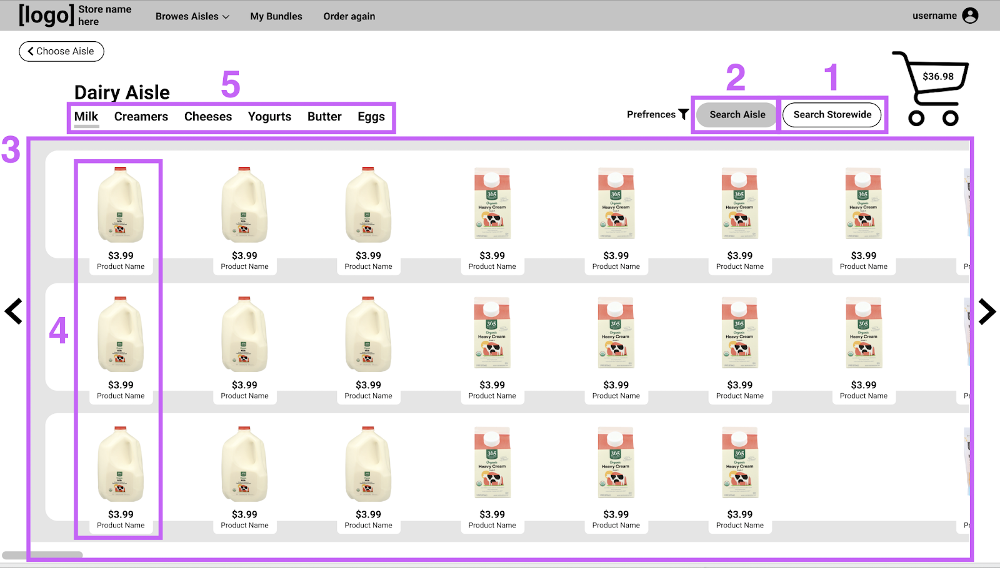
[1] Grocery sites typically have their search bar front and center, indicating that searching the store is a primary action. In order to retrain users to try perusing, our team chose to have the search bar hidden automatically, and place the buttons to access searches on the right side of the screen. In comparison, the subcategories of an aisle are displayed on the left under the aisle name, taking priority by Fitts’s Law.
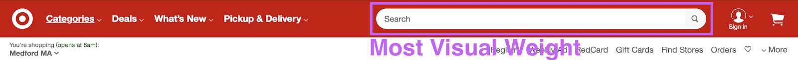
[2] A specific “Search Aisle” button allows for greater user freedom that more closely emulates physical shopping. This option
acknowledges that a user has done the work of narrowing to an Aisle, and curbs the frustrating experience of seeing some results that are
wildly outside the scope of what they are looking for.
[3] The most original aspect of this design is the horizontal scroll layout, which is meant to mimic the look and feel of a real store aisle.
Users consistently expressed an affinity toward this format and were quick to verbalize that it felt like a physical store. A nuanced benefit
to this directionality is that, by virtue of computer screen aspect ratios, items stay on the screen longer as users scroll. This is intended
to give people more time to see something they might want peripherally, and to construct a more grounded sense of place.
[4] Displaying logical groupings of items is a core pillar of physical grocery stores. It allows users to quickly see what is relevant to their needs, and compare factors like pricing one to one. Our research into other online grocery stores revealed that most sites do not have logical groupings. For example, Whole Foods’s dairy aisle has milks of the same brand dispersed throughout the display order. So, if you found the brand and size you wanted of skim milk, but you buy 2%, you would have to continue scrolling for an unforeseeable amount of time to find the option you want. Our team suspects that this is a reason that people feel overwhelmed in the seemingly infinite scroll, and decided that a mechanism for logical display groupings should be a core tenant of our design.
[5] Finally, the hierarchy of our aisle header is intended to encourage people to make frequent use of categories. Rather than filtering to that category, the page scrolls so that the first item fitting that category is in the top, leftmost spot. An animation takes the user past prior results, so that they have the opportunity to discover something they might like on the way. Swiping between categories also creates a more dynamic experience than filterning, encouraging users to zoom back and forth between categories without feeling a high level of commitment to the action.
The Concept of Bundles
A consistent pain point we heard from users was that they struggled to remember to restock staple foods in addition to buying ingredients for specific dishes. This prompted us to design an interaction that promotes recognition over recall for restocking common foods.
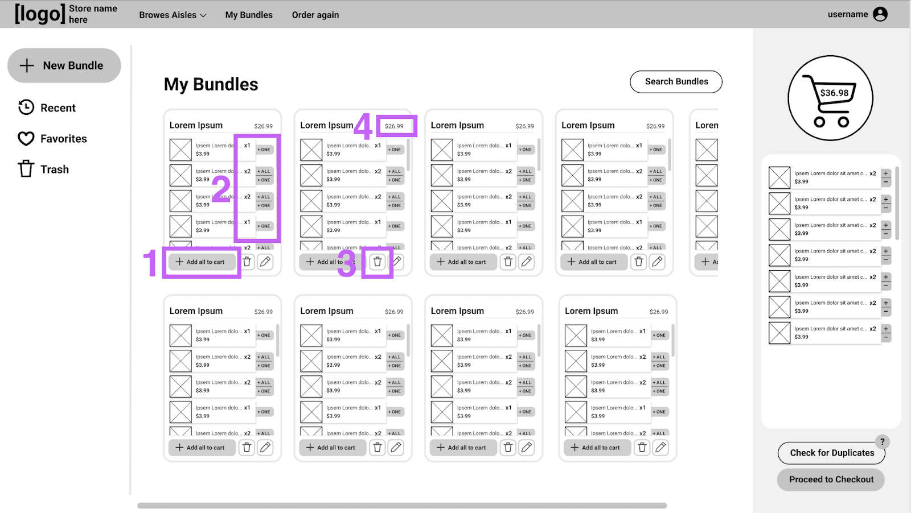
Bundles are custom collections of items that users can make. For example, they might curate a Bundle of the items they buy most commonly every week.
So, after a user creates a Bundle, they can add all of those items to their cart in one click every time they shop [1]. Alternatively, they can scroll
through the Bundle and add items one at a time, which allows them to mentally check if they already have enough eggs (for example), without having to
recall that they needed to consider eggs [2]. Our team anticipates that new users will opt for adding items one at a time as they get more comfortable
with the idea, and power users will opt for the “Add all the Cart” button more frequently.
Bundles can be edited at any time, so if a user were to switch to a lactose free diet, it’s simply a matter of deleting 2% milk and adding oat milk to
their list of staples [3].
Another common use for Bundles is grouping recipe ingredients. So, when a user decides on “Taco Tuesday” that week, they can add all the materials to
their cart without having to search each item or scour through recently bought options. Bundles also allow users to see exactly how much a meal will
cost them at a quick glance [4].
Users are able to create Bundles in multiple ways. They can make one from scratch by searching up ingredients and adding them to a list [5]. Or, they can go into an ingredient-sorting mode just before checkout that lets them group items in their cart into Bundles [6]. This option circumvents the effort of searching up items to make a Bundle, and would likely be used in recipe Bundles because users are likely to have all the ingredients for a recipe already in their cart.
Minimalist Design
Our website aims to use minimalist design that presents only the most important actions that users might want to take. Our home page emphasizes the core functionality of the site, encouraging users to select an aisle first and foremost, and informing users that Bundles are an option.
In contrast, many grocery sites are so overrun with ads, that users have to scroll considerably to even see that categories are an option. This further cements users’ inclination to use the search bar exclusively. The idea of categories on a home page isn’t itself novel, but the emphasis in our design makes the interaction far less overwhelming.
Interaction Flow
The diagram below shows how user actions link together in our prototype, and highlights in a black box the interactions that we haven’t designed.
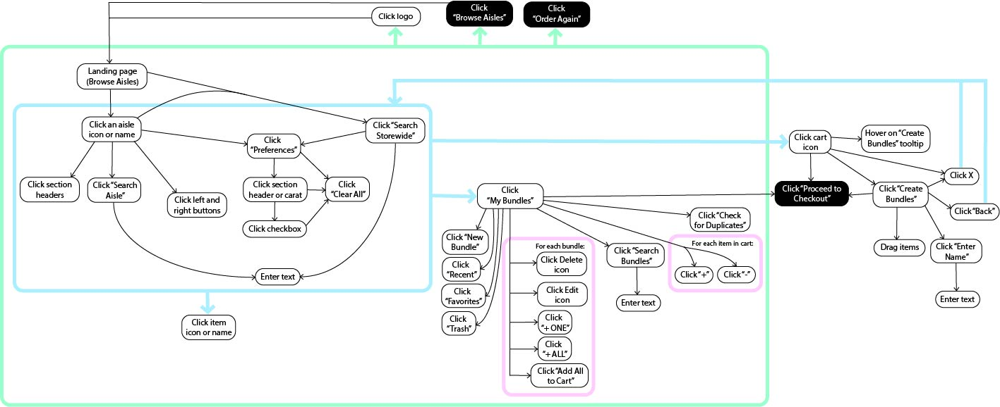
Design feedback and Revisions
In the most recent phase of development we focused on revising and polishing the current prototype. The design revisions consisted of two stages.
First, a rough prototype of the interface was taken back to test users who helped refine the ideas present in the prototype. These feedback sessions primarily focused on the design of user-requested features and identifying user experience pain points.
Second, after implementing feedback from the design revision sessions, we brought a team of designers (consisting of other students taking the course) on board to perform a heuristic evaluation of the prototype. This process was designed to identify areas of improvement by evaluating our interface using Jakob Nielson's ten general usability heuristics. We also gathered feedback from our instructor to implement specific UI changes and to provide insight from his experience working in design at a company.
The final development phase focused on refining the design to implement the design feedback from the heuristic evaluations as well as polishing the design as a whole. The first major design change which needed to be made was that users expressed frustration and the feeling of being overwhelmed with the initial prototype. They said that they "could understand the fundamental concept of trying to mimic store shelves, but there [were] just so many things happening that [they couldn't] focus on the one task [they wanted] to perform." In response, we made a deliberate attempt to reduce the number of items shown as well as provide visual structure to the page to ground the design.
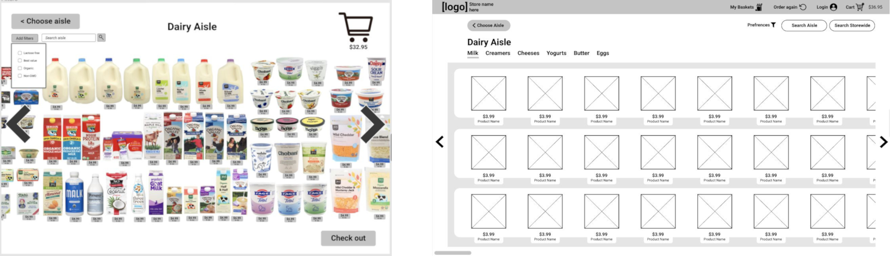
Based on user feedback, we revised how our filtering and in-aisle search features displayed results. In the first iteration, the items that matched the search or filtering criteria were highlighted to make them distinct to the user. This led to an overly cluttered interface, and users became frustrated with being unable to rapidly see all items fitting their selection criteria. We solved this problem by transitioning to a system where the screen will display only items that meet the filtering or search criteria.
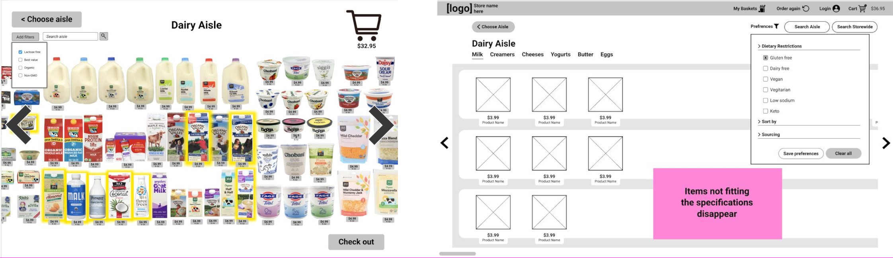
A fairly lightweight and primarily visual feature that we implemented came from some users’ expressing a desire for a way to navigate within an aisle while maintaining the ability to see all the items pass as they navigate--similar to the brick and mortar experience of navigation flags within an aisle. [1]
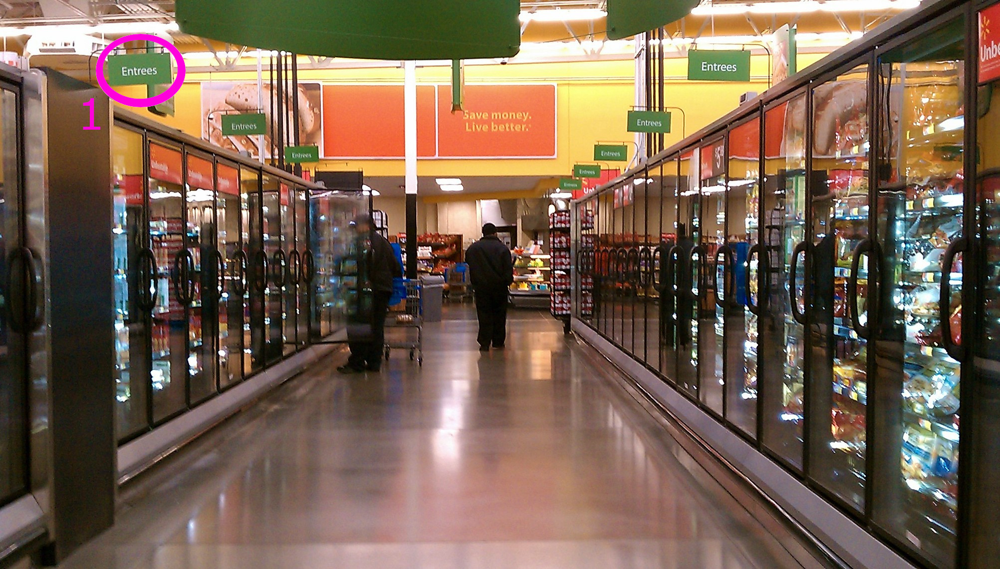
We structured our solution under a header navigation architecture where users can navigate within an aisle by selecting a category, and when the user selects a category, the items scroll past as though the user is walking through the virtual aisle.
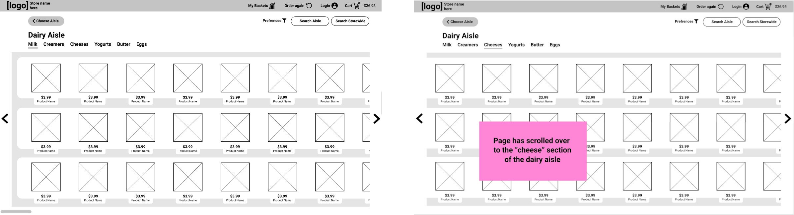
Users also expressed frustration with traditional e-commerce systems' lack of a method to save commonly purchased items (to simplify repeat purchases). Some of our users expressed how they would appreciate the ability to purchase all of the ingredients for a recipe without having to find them all individually. To solve this, we introduced the system of Bundles: saved, user-defined item groupings that can be added to the cart all at once. Users can create and modify their Bundles at any point in the shopping experience, but we expect that the majority of Bundle creation will occur at checkout--the final configuration of items are already together in the cart and the user, having just done the work to track down these items, is more willing to create a Bundle to save them time on their next visit. Bundles can be used in a wide range of capacities--everything from ignored to a central hub of the shopping experience--for a wide variety of use cases, and we expect that the majority of our users can find value somewhere on this spectrum.
The last major change that was made in response to user feedback was a shift to emphasize actions occurring as pop-up modals throughout the experience. One way we used this was to combat the problem of users having difficulty tracking what was in their cart in traditional e-commerce experiences. One user remarked, "[when online shopping] I find I don’t really know how much I have in my cart. I just put things in my cart as I go, but then I'm always surprised by how much I ordered and how much I spend when it comes to checkout." We aimed to make checking the cart status more dynamic and integrated with the overall experience by showing the cart contents in a pop-up modal which the user can easily open and close by clicking on the cart icon throughout their shopping experience.
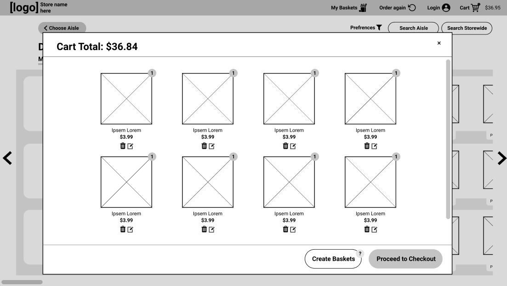
Iterative Improvements
Acting on Heuristic Evaluation Feedback
Based on the feedback from a heuristic evaluation conducted by classmates, we implemented a number of changes in our prototype.
View a summary of the heuristic evaluation feedback, whether or not we implemented the change, and how we implemented each change
here.
The first change we made was to rethink and further develop our Bundles feature, originally called “Recipes.” In our heuristic
evaluation, we found that the wording “Group by Recipe” was confusing, and that if users had recipes they wanted to use, they’d
rather see them at the beginning of the shopping process rather than the end. This didn’t match the conceptual model that we as
designers had imagined for the feature--we wanted the feature to be an easy way of grouping items at checkout so that they could
be quickly added for future shopping trips. In order to address this problem, we implemented four changes.
First, we changed the name of the feature from “Recipes” to “Bundles.” While “Recipes” has a specific meaning in the context of
grocery shopping that is strongly associated with the planning phase of grocery shopping (something we explicitly wanted to de-emphasize
in our design), “Bundles” is more general, and more closely matches our conceptual model of the feature.
Second, we re-worded the tooltip explanation of the feature to emphasize returning to shop next time, to better communicate why the user
is prompted to create Bundles before checkout. We also made the explanation more concise, reducing the cognitive load the user needs to
engage with the feature. These first two changes are illustrated in the screenshots below, which show our prototype before and after
implementing these changes.
Third, we added a way for the user to create Bundles from scratch. While our intended use of Bundles was to easily group together items the user was currently buying, we also wanted to allow users who enjoy planning to be able to put in Bundles ahead of time. From a conceptual model standpoint, it’s also easier for the user to imagine that they’re adding things to an existing collection at checkout if they can add things to the collection at other times as well. Below, creating a Bundle from checkout is shown on the left, and creating a Bundle from scratch is shown on the right.
Finally, we added Bundles to our header-level navigation, strengthening the user’s conceptual model of “Bundles” as a collection of groups they can access for later. The headings before and after this development phase are shown below.
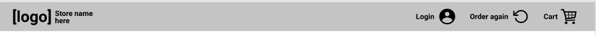
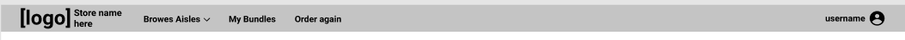
Another set of changes we made helped clarify our search functionality. First, we more clearly separated the in-aisle search bar from the global search by making the in-aisle search bar appear at the top of the screen when the user clicks “Search Aisle.” We also added text inside the search bar to clarify where it’s searching. Finally, we made the “Search Aisle” and “Search Storewide” buttons different colors to emphasize different functions. The “Search Storewide” button is the same color scheme as the “Choose Aisle” button in the top left of the page, indicating that it takes you to a different screen. These changes are shown below.
Finally, we added an additional modal screen after the user clicks on an item that shows details about the item and prompts them to select a quantity and add to the cart, reducing user error in adding items to the cart.
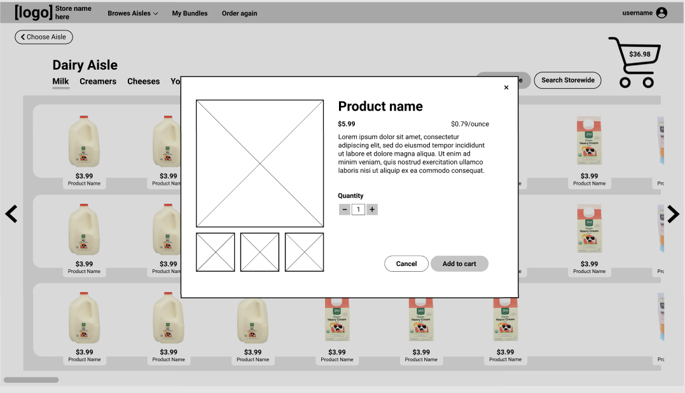Acting on Instructor Feedback
In addition to our heuristic evaluation feedback, we reached out to our instructor for more specific feedback on our user interface. Based on that feedback, we implemented the following changes:
- Homepage that emphasizes aisle browsing and bundle functionality
We updated our homepage to emphasize the things that make our design unique: browsing by aisle, and Bundles. Because these features are what the user spends the most time interacting with in our design, highlighting them on the landing page helps the user build a more accurate conceptual model of our product.
- Aisle header that provides user control and freedom, and highlights primary actions with layout
In order to improve user control and freedom, and the user’s conceptual model of the design, we rearranged the locations of buttons in the header bar and the aisle header. By adding the buttons “Browse Aisles” and “My Bundles” to the header, we improve user control and freedom by allowing them to access those options at any time while using the website. We also moved these buttons, along with the “Order again” button, to be left-aligned, because they are “backtracking,” allowing the user to retrace their steps or choose a different path rather than moving the user closer to checkout. We moved the “Choose Aisles” button in the aisle view further left for this same reason. We moved the cart out of the header and into the aisle view to emphasize that it’s part of the core experience, and not related to navigation like the other items in the header. We also moved the “Preferences,” “Search Aisle,” and “Search Storewide” buttons to be in-line with the aisle’s subcategories to clarify that they’re used for finding items in the store, as opposed to navigating the website.
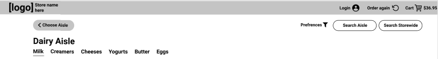
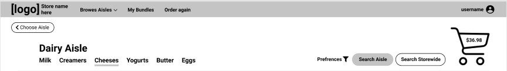
- Search bar that remains hidden to encourage browsing, but works predictably/modularly when you click search
As mentioned earlier, we adjusted our in-aisle search bar so that it pops down from the top of the screen. By keeping the search bar hidden by default, we reduce unnecessary clutter on the screen and can keep the user focused on the core experience of browsing.
- Categories in an aisle disappear if there are no items that apply after a filter
In our previous prototype, when filtering items within an aisle, the aisle’s categories remained the same even when there were no items falling within that category. This led to the user developing a false conceptual model, believing that there were more items fitting their filter criteria in those categories. To resolve this, we adjusted our UI so that only the categories of the remaining items are listed. Additionally, we adjusted the way items are stacked in aisles, so that items in different categories are in distinct columns.
- Increased the size of the cart to make it feel more like in-person shopping
By making the cart icon bigger, we can take advantage of the user’s real-world perceptions, and make it more intuitive for the user to know where to check how many items they have currently and how much they cost.
Design Founded in User Needs
Our final design aims to add value to the online-grocery shopping experience for each of the core user personas established in the needs analysis phase. We outline how our design does this for each persona below.
Gourmet Chef
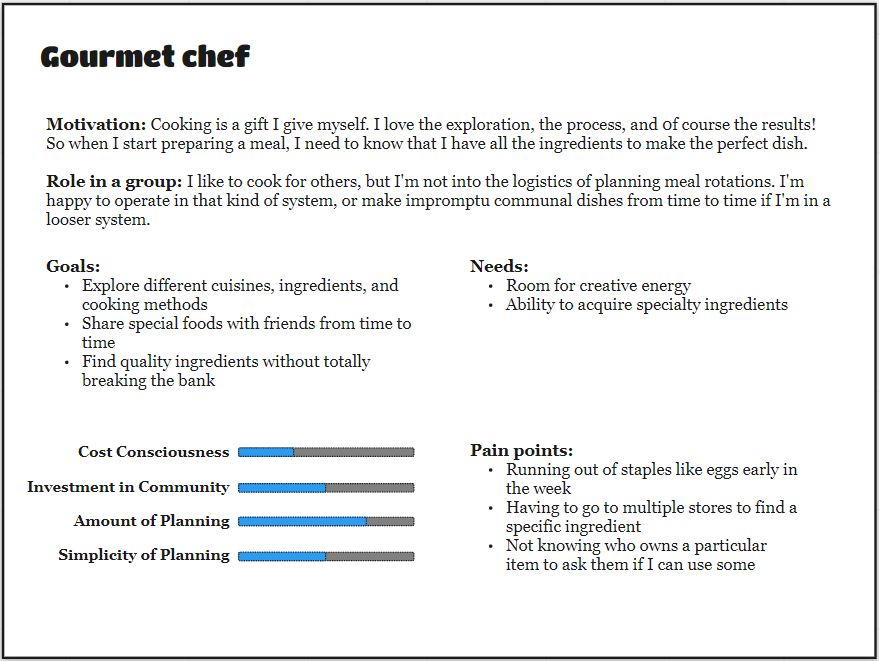
The Gourmet chef persona loves cooking and meal-planning, but isn’t thrilled about the logistics of shopping for a group.
Why our design might appeal to them:
- Logical groupings in the aisles helps this persona compare prices and quality side by side, rather than having to scroll extensively between options.
- The additional stocking capabilities of online shopping means this persona is less likely to have to go to multiple stores to find the right ingredient, saving them time.
- Ever prepared, this persona prepares recipes and sometimes they might want to make a winning dish a second time. In a typical experience, they have to go through the repetitive process of looking up the recipe, finding the ingredients, and making a shopping list. With Bundles, they can order all the ingredients in one click.
Attention Elsewhere
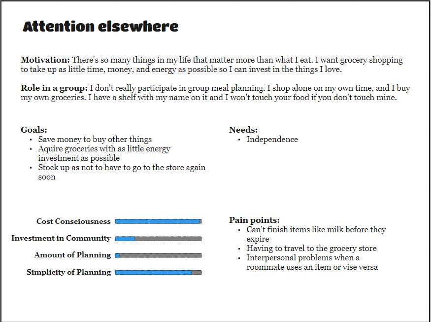
The Attention elsewhere persona isn’t interested in grocery shopping at all, and would rather spend their time doing other things.
Why our design might appeal to them:
- This persona has never made a meal plan in their life, so the ability to browse aisles gives them a more forgiving experience (if they don’t know what exactly to search for) while also empowering them with the ability to filter by their most important factors like price.
- While a persona who sees grocery shopping as an unavoidable chore is difficult to please, they might be more likely to gravitate to an online interface to save time--especially if they live far away from a grocery store as some of our users did.
Community Builder
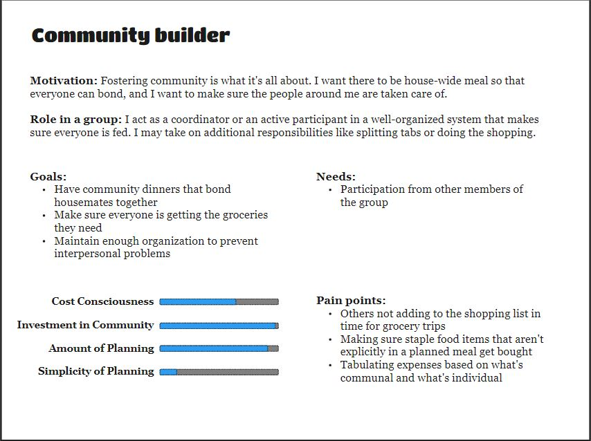
The Community builder persona puts a lot of time and energy into grocery shopping in order to ensure that their housemates are well-fed.
Why our design might appeal to them:
- As the primary purchaser in the house, this persona needs to make sure weekly staples are purchased so that everyone in the house is happy. Bundles can make sure nothing is forgotten--in addition to their original purpose of aiding meal planning.
- Online ordering relieves the burden of physically taking a trip to the store, which is especially nice since this persona is likely to be doing other tasks to maintain a household.
Cognitive Walkthroughs
To assess a user interface, it’s useful to conduct a cognitive walkthrough to determine where users may encounter errors or difficulty. A general cognitive walkthrough is shown in the diagram below, but to better illustrate specific issues, we conduct cognitive walkthroughs for three specific goals, illustrated in tables. For the purpose of simplicity, we assume that the user has already navigated to the website’s homepage and is logged in.
Goal 1: Adding a snack to the cart
For our first user goal, we assume that the user is buying groceries and wants to add a snack to their order. They know the category of snack they want, but not which specific snack they want.
| Task | Will users understand how to start it? | Are the controls conspicuous? | Will users know the control is the correct one? | Was there feedback to indicate if the task was completed? |
|---|---|---|---|---|
| Click the “Snacks” aisle button | Yes--the aisle buttons are round and distinctly colored, indicating they can be clicked | Yes--the aisle buttons take up a large amount of the page | Yes--the aisle button is labeled “Snacks” and has an image associated with snacks | Yes--the page changes to the snacks aisle, and the user can read the title of the aisle to determine if they’ve reached the correct aisle |
| Click the category name that sounds good | Maybe--the category names have a gray underline indicating the current category being viewed, but no indication that they are clickable buttons | Yes--the category names are near the top of the page near the aisle name | Yes--the different category names correspond to the category the user wants to navigate to | Yes--the page scrolls to the category the user clicked No--nothing happens if the user is already in the category they clicked |
| Click the left and right arrows to look at more items | Yes--items on the right side of the screen are partially cut off, and the arrow and scrollbar at the bottom of the screen indicate there’s more to see | Yes--the arrows are in a darker color than surrounding UI elements | Yes--the arrow is a common UI element indicating navigation | Yes--the aisle scrolls to left or right to show more items No--if the user is at the far end of an aisle and tries to go further, nothing happens |
| Click the item the user wants | Yes--the action of clicking the item is common to all online grocery shopping applications | Maybe--while it is intuitive to click the item, it could be made more obvious by highlighting it on hover | Yes--clicking the item is standard practice | Yes--a modal showing the item’s picture and name pops up |
| Enter item quantity | Yes--entering a quantity is a standard task across online shopping applications | Yes--the text asking for quantity is conspicuous, as are the text box and plus and minus buttons | Yes--the plus and minus indicate more or less, and clicking inside the box to type in a number is standard across applications | Yes--the number updates to the number the user entered, or increases or decreases |
| Click “Add to cart” | Yes--the “Add to Cart” button is clearly labeled | Yes--the button is on the right hand side, indicating that it brings the user closer to checkout, and is colored differently | Yes--the button is labeled clearly | Maybe--there is no explicit message, but the modal closes |
Goal 2: Creating a new Bundle for lemonade
For this goal, we assume the user is buying groceries to make lemonade, and at check-out wants to create a Bundle for lemonade.
| Task | Will users understand how to start it? | Are the controls conspicuous? | Will users know the control is the correct one? | Was there feedback to indicate if the task was completed? |
|---|---|---|---|---|
| Click an aisle icon or name | Yes--the aisle buttons are round and distinctly colored, indicating they can be clicked | Yes--the aisle buttons take up a large amount of the page | No--the cart isn’t visible from the homescreen, so the user must first enter an aisle. | Yes--the page changes to the selected aisle page |
| Click the cart icon | Yes--clicking the cart icon is standard across online shopping applications | Yes--the cart is large, in the main body of the page, and aligned to the right hand side of the page | Yes--clicking the cart is standard practice | Yes--a modal showing the cart is opened |
| Click “Create Bundles” | Yes--the button’s name indicates its function | Yes--the button is located directly to the left of the Checkout button, implying it is an action to be taken before checking out, which is what the user is trying to do | Yes--the button is clearly labeled | Yes--the user is navigated to a Bundles modal |
| Drag items from cart into Bundle | Yes--the blank Bundle shown has instructions for doing this | Yes--the blank Bundle shown has instructions for doing this | Yes--the blank Bundle shown has instructions for doing this, and the items from the cart are shown as concise blocks, making it easy to imagine moving one | Yes--the moved item is displayed in the in-progress Bundle |
| Enter Bundle name | Yes--clicking grayed out text in a name field is standard practice for naming an item | Yes--the text is grayed out, and being able to click in a name field is standard practice | Yes--clicking inside a name field to rename it is standard practice | Yes--when the user clicks outside the name field, the name of the Bundle is updated to what they typed in |
| Click “Save” button | Yes--the button’s name indicates its function, it only appears after the user has added items to the new Bundle, and the button is inside the new Bundle | Yes--the button is colored differently and is in the same area of the screen the user is looking | Yes--the button is clearly labeled | Yes--a message confirms that the user has saved the Bundle |
Goal 3: Using an existing Bundle to add weekly staples to the cart
For this goal, the user wants to add items to their cart from an existing Bundle called “Weekly Staples” that contains items the user buys every week.
| Task | Will users understand how to start it? | Are the controls conspicuous? | Will users know the control is the correct one? | Was there feedback to indicate if the task was completed? |
|---|---|---|---|---|
| Click “My Bundles” | Yes--it is standard practice for text in a header bar to be links for navigation | Yes--the text is right-aligned, and in the header bar with other buttons for sitewide navigation | Yes--it is standard practice to click text links in header bars | Yes--the web browser navigates to a new page |
| Click “+ Add All to Cart” | Yes--the task they want to achieve is communicated clearly, and is inside a button icon | Yes--the button is clearly colored and round | Yes--the button is clearly labeled | Yes--the user’s cart on the right side updates to show all the items in the bundle Note--there should be a brief highlight animation or something else to draw the user’s attention to their cart |
Moving Forward
We are pleased with what we’ve been able to accomplish in this phase and believe that our product’s core concept could find real-world traction among a subset of grocery shoppers. That said, there’s still more we would’ve liked to do if we’d had more time--we would spend our next sprint increasing the visual fidelity of the home page and main aisle view before doing another round of user testing. We would also be interested in isolating features that we believe are most compelling (i.e. bundles) for a round of A/B testing to see whether users truly prefer our current aisle-centric design or whether they would gravitate toward a traditional Amazon-style view, but with bundles added. Finally, there’s still plenty of additional room to explore with bundles and if we had more time it would be interesting to design a “social” component (sharing, trending, liking, saving, recommended) to them and see if it adds user value.
A few key ideas communicated in our instructor feedback that we didn’t address include:
Suggesting Bundles. One possible area for improvement is to have the site suggest Bundles at checkout based on what the user has in their cart, or scrape recipes online for ingredient lists. However, for the scope of this project we chose to look at manual entry, both for simplicity and to avoid some users’ concerns about privacy related to machine learning algorithms.
UI issues related to higher-fidelity mock-ups. When introducing real images of food and real product names, we introduce new issues users will face when navigating a user interface, which we didn’t address for the scope of this project. These include having legible and consistent images of products arranged within a grid that still feels natural to navigate from side to side, and having confusing, long, or repetitive item names.